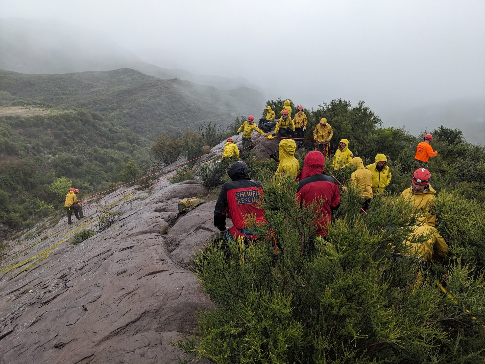

The gear that pulls people off a cliff face or out of a flooded river isn't cheap — and we buy it with your help. Your gift keeps Ventura County's volunteer rescuers ready for the next call.
VCSAR1 relies primarily on private donations to support our search and rescue work. Unlike many charities, 100% of each dollar donated goes directly to the team, its equipment, and its mission — not overhead. All amounts are welcome, and every one of them helps us stay ready to respond.
Search and rescue is equipment-intensive. Here's the kind of life-saving capability your donation directly supports.
Ropes, harnesses, anchors, and hardware for high-angle rescue — inspected and replaced on a strict safety cycle.
Field medical kits, litters, and stabilization gear to treat and move patients out of the backcountry.
Reliable communications gear to coordinate searches across 1,873 square miles of rugged terrain.
Maintenance and equipment for the rigs that get teams to the trailhead and patients back out.
Drysuits, throw bags, and flotation for fast-moving water rescues during floods and river emergencies.
Certifications and continuing education that keep every member sharp across the whole rescue domain.
Every amount is welcome — and every dollar reaches the team. Pick a level or give any amount that's right for you.
Fill out the form and a SAR representative will follow up with you to complete your donation. Prefer to give another way, or want to discuss a larger gift or in-kind donation? Let us know in the message.
VCSAR Team 1 operates as part of the Ventura County Sheriff's Office volunteer corps. A representative can provide details on tax-deductibility for your contribution.